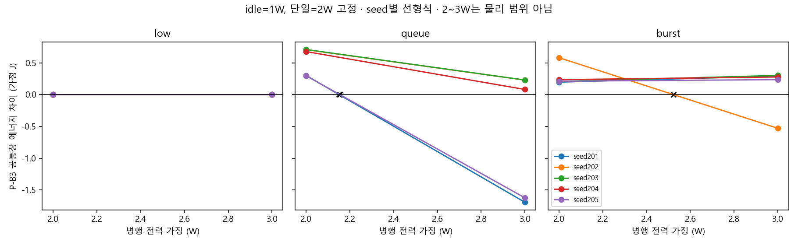
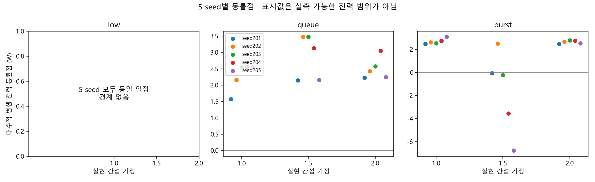
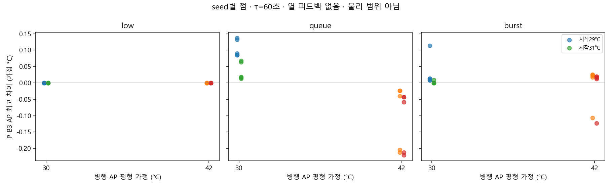
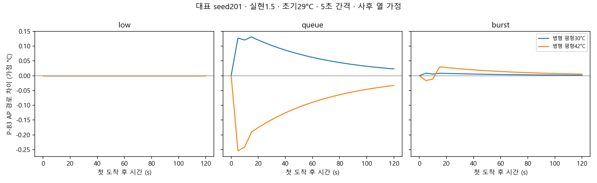

예상 간섭=실현 간섭은 간섭계수에 한해 완벽한 정보를 주는 진단 가정입니다. 미래 처리시간이나 pair 손해를 정확히 안다는 뜻은 아닙니다. 전력·AP 값도 미보정 연구자 스트레스 가정입니다. 이 화면은 새 실기기 표본·독립 검증·최종 추천 정책이 아닙니다.
예상 간섭 × 실현 간섭 · P−B3
병행 전력 가정과 공통창 에너지

시나리오·seed별 에너지 동률점

AP 초기값·병행 열 가정 민감도


재현과 근거
설정은 CONFIG.json; 계수는 결과를 보기 전 고정했습니다. 원본 해시는 SOURCE_HASHES.json. 비교 입력은 기존 CAL-03 동결 개발 설정과 기존 합성 도착 24건·평가 seed 201–205입니다. 성공 요청만 있는 모형 vector이며 실패 추정은 없습니다.
CSV: 정책별 지표 · seed별 P−B3 · heatmap 요약 · 에너지/동률점 · AP · 대표 AP 경로 · 대표 배정·대기. 모든 PNG에는 같은 이름의 SVG가 있습니다. 명령: python -m tools.d1_arrival_diagnostic.